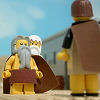

|
|
|
1 Samuel 9
|
|
| 9:1
Now there was a man of Benjamin, whose name was Kish, the son of Abiel, the son of
Zeror, the son of Bechorath, the son of Aphiah, a Benjamite, a mighty man of
power. |
 (9:1) "Kish, the son of Abiel" (9:1) "Kish, the son of Abiel"
Who was the father of Kish?
|
| 9:2
And he had a son, whose name was Saul, a choice young man, and a goodly:
and there was not among the children of Israel a goodlier person than he:
from his shoulders and upward he was higher than any of the people. |
 (9:2) "Saul, a choice young man, and a goodly: and there was not among the
children of Israel a goodlier person than he: from his shoulders and upward he was higher than any of the people." (9:2) "Saul, a choice young man, and a goodly: and there was not among the
children of Israel a goodlier person than he: from his shoulders and upward he was higher than any of the people."
Saul was the best looking guy in Israel and was a foot taller than everyone else.
Samuel Anoints Saul
|
| 9:3
And the asses of Kish Saul's father were lost. And Kish said to Saul his
son, Take now one of the servants with thee, and arise, go seek the asses.
|
| 9:4
And he passed through mount Ephraim, and passed through the land of
Shalisha, but they found them not: then they passed through the land of
Shalim, and there they were not: and he passed through the land of the
Benjamites, but they found them not.
|
| 9:5
And when they were come to the land of Zuph, Saul said to his servant that
was with him, Come, and let us return; lest my father leave caring for the
asses, and take thought for us.
|
| 9:6
And he said unto him, Behold now, there is in this city a man of God, and
he is an honourable man; all that he saith cometh surely to pass: now let us
go thither; peradventure he can shew us our way that we should go. |
|
| 9:7
Then said Saul to his servant, But, behold, if we go, what shall we bring
the man? for the bread is spent in our vessels, and there is not a present
to bring to the man of God: what have we? |
|
| 9:8
And the servant answered Saul again, and said, Behold, I have here at hand
the fourth part of a shekel of silver: that will I give to the man of God,
to tell us our way. |
|
| 9:9
(Beforetime in Israel, when a man went to enquire of God, thus he spake,
Come, and let us go to the seer: for he that is now called a Prophet was
beforetime called a Seer.) |
|
| 9:10
Then said Saul to his servant, Well said; come, let us go. So they went
unto the city where the man of God was. |
|
| 9:11
And as they went up the hill to the city, they found young maidens going
out to draw water, and said unto them, Is the seer here? |
|
| 9:12
And they answered them, and said, He is; behold, he is before you: make
haste now, for he came to day to the city; for there is a sacrifice of the
people to day in the high place: |
|
| 9:13
As soon as ye be come into the city, ye shall straightway find him, before
he go up to the high place to eat: for the people will not eat until he
come, because he doth bless the sacrifice; and afterwards they eat that be
bidden. Now therefore get you up; for about this time ye shall find him. |
|
| 9:14
And they went up into the city: and when they were come into the city,
behold, Samuel came out against them, for to go up to the high place. |
|
| 9:15
Now the LORD had told Samuel in his ear a day before Saul came, saying, |
|
| 9:16
To morrow about this time I will send thee a man out of the land of
Benjamin, and thou shalt anoint him to be captain over my people Israel,
that he may save my people out of the hand of the Philistines: for I have
looked upon my people, because their cry is come unto me. |
|
| 9:17
And when Samuel saw Saul, the LORD said unto him, Behold the man whom I
spake to thee of! this same shall reign over my people. |
(9:17) "When Samuel saw Saul, the LORD said unto him, Behold the man whom I
spake to thee of! this same shall reign over my people."
God tells Samuel that Saul is the man he has chosen to be King.
|
| 9:18
Then Saul drew near to Samuel in the gate, and said, Tell me, I pray thee,
where the seer's house is.
|
| 9:19
And Samuel answered Saul, and said, I am the seer: go up before me unto
the high place; for ye shall eat with me to day, and to morrow I will let
thee go, and will tell thee all that is in thine heart. |
|
| 9:20
And as for thine asses that were lost three days ago, set not thy mind on
them; for they are found. And on whom is all the desire of Israel? Is it not
on thee, and on all thy father's house? |
(9:19-20) "I am the seer... And as for thine asses that were lost three days ago, set not thy mind on
them; for they are found."
Samuel found Saul's missing asses without even looking for them. You see, he's a seer -- just like Joseph Smith!
|
| 9:21
And Saul answered and said, Am not I a Benjamite, of the smallest of the
tribes of Israel? and my family the least of all the families of the tribe
of Benjamin? wherefore then speakest thou so to me?
|
| 9:22
And Samuel took Saul and his servant, and brought them into the parlour,
and made them sit in the chiefest place among them that were bidden, which
were about thirty persons. |
|
| 9:23
And Samuel said unto the cook, Bring the portion which I gave thee, of
which I said unto thee, Set it by thee. |
|
| 9:24
And the cook took up the shoulder, and that which was upon it, and set it
before Saul. And Samuel said, Behold that which is left! set it before thee,
and eat: for unto this time hath it been kept for thee since I said, I have
invited the people. So Saul did eat with Samuel that day. |
|
| 9:25
And when they were come down from the high place into the city, Samuel
communed with Saul upon the top of the house. |
|
| 9:26
And they arose early: and it came to pass about the spring of the day,
that Samuel called Saul to the top of the house, saying, Up, that I may send
thee away. And Saul arose, and they went out both of them, he and Samuel,
abroad. |
|
| 9:27
And as they were going down to the end of the city, Samuel said to Saul,
Bid the servant pass on before us, (and he passed on), but stand thou still
a while, that I may shew thee the word of God. |
|
|